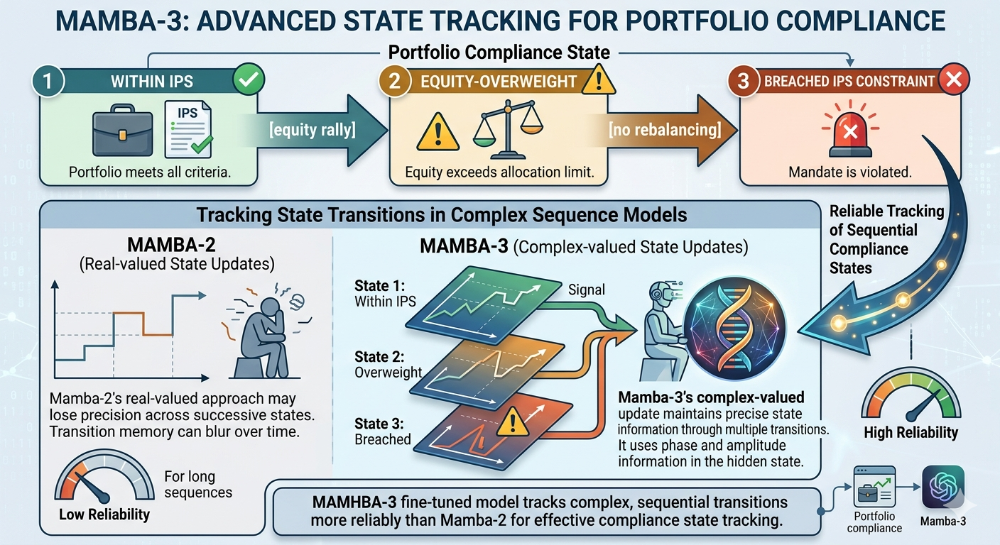
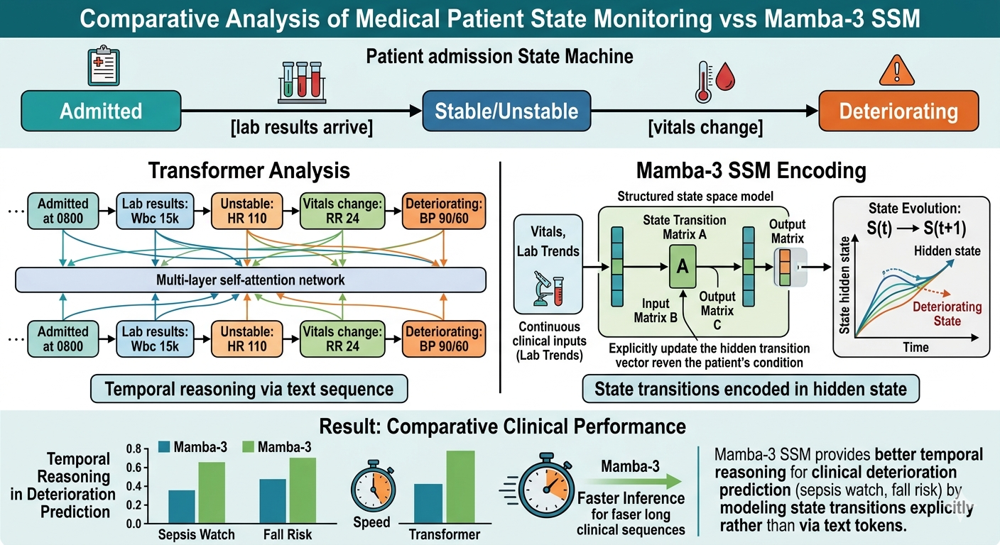

This is Part 7 of the RAG Enterprise Series. This post stands alone — it does not require reading the domain posts (Parts 2–5). For context on where SSM architectures fit in the L1–L4 retrieval framework, Part 1 has the reference.
The retrieval layer in RAG — L1 through L4 — is model-agnostic. What changes with Mamba is what receives the retrieved context. That distinction sounds narrow; its practical implications for long-document enterprise RAG are not.
6.3 Architecture Backend Selection: Transformer vs. SSM for RAG Generation
This is an architectural infrastructure decision. The retrieval layer (L1-L4) is architecture-agnostic — it produces a set of relevant chunks. What changes is what receives those chunks:
Current standard: [Retrieved chunks] → [Transformer LLM] → [Answer]
Mamba-based RAG: [Retrieved chunks] → [Mamba/Hybrid LLM] → [Answer]
Standard Transformer-based RAG has a structural bottleneck that is easy to miss if you're only thinking about retrieval quality:
Transformer attention complexity: O(n²) compute, O(n) KV cache memory
Where n = total tokens in context (system prompt + retrieved chunks + conversation history)
For a RAG system with:
- System prompt: ~500 tokens
- Top-k retrieved chunks: ~3,000 tokens
- Conversation history: ~2,000 tokens (multi-turn, Agentic L4)
Total context n ≈ 5,500 tokens
At n=5,500: attention cost = 5,500² = 30.25M operations per layer
At n=11,000: attention cost = 121M operations per layer (4× worse for 2× context)
At n=22,000: attention cost = 484M operations per layer (16× worse for 4× context)
Mamba's selective state space mechanism replaces this with linear scaling in sequence length and constant memory regardless of context length. The implications differ by domain and RAG level:
Long-Context Retrieval — Where Mamba's Linear Scaling Directly Helps
| Domain | Long-context RAG scenario | Why Transformers are costly here |
|---|---|---|
| Healthcare | Full EHR summary (3,000+ tokens) + 5 clinical guideline chunks + patient history | Each additional retrieved document adds quadratic cost |
| Wealth Management | Prospectus or offering memorandum (10,000+ tokens) being analyzed for suitability flags | OM documents routinely exceed 32k tokens |
| Personal Banking | 90-day transaction history + product knowledge + complaint history in one context | Agentic cash flow diagnosis needs full transaction log |
| Travel | Multi-day itinerary planning session accumulates context over many turns | Inventory docs + visa rules + destination content expand rapidly |
With a Mamba backend, retrieving more context chunks — or using longer individual documents — does not trigger the quadratic cost explosion. This changes the economic calculus of how many chunks you inject per query: under a Transformer, there's pressure to minimize k in top-k because each additional chunk is increasingly expensive. Under Mamba, you can afford k=15 or k=20 without the same penalty.
Practical implication for L3 and L4 RAG specifically: Graph traversal (L3) and agentic loops (L4) naturally produce more retrieved context across multiple retrieval turns. A Mamba backend is a better fit for these levels than a Transformer, because the accumulated context across agent turns no longer creates an exponentially expensive prompt.
Mamba's Selection Mechanism as Implicit Retrieval Filtering
This is the insight that is easy to miss when reading the Mamba paper. The selective SSM doesn't just process context cheaply — it selectively compresses context based on what's relevant to the current input. The model learns to propagate relevant information through its hidden state and gate out irrelevant information, similar in spirit to what a reranker does but happening inside the forward pass.
The selection mechanism addresses the inability to perform content-based reasoning that LTI (Linear Time-Invariant) models had. The SSM parameters (B, C, Delta) become functions of the input — allowing the model to selectively remember or forget information along the sequence.
Transformer approach: All retrieved chunks are in the attention window equally.
The model pays equal attention budget to a highly relevant chunk
and a marginally relevant one unless instructed otherwise.
Mamba approach: The selection mechanism gates information based on content.
A chunk that's irrelevant to the current token position gets
compressed (forgotten) in the hidden state. A relevant one is
propagated.
In enterprise RAG where top-k retrieval still returns noisy chunks (a known problem at all levels), Mamba's selection mechanism provides a second layer of implicit filtering without requiring an explicit reranker. This doesn't eliminate the need for a reranker in hybrid RAG — it reduces the damage when the reranker isn't perfect.
Domain relevance:
- Healthcare: Clinical notes retrieved alongside a specific query may contain large amounts of irrelevant patient history. Mamba's selection can compress sections unrelated to the current diagnostic question.
- Wealth Management: An earnings transcript retrieved for NIM analysis contains 20,000 tokens. The relevant NIM discussion is 400 tokens. Mamba learns to gate through the relevant sections.
- Personal Banking: A 90-day transaction log is retrieved for cash flow analysis. Most transactions are routine; Mamba compresses the routine and propagates the anomalies.
Constant Memory for Agentic RAG (L4) — The KV Cache Elimination
This is the most operationally impactful Mamba property for L4 Agentic RAG systems.
The Transformer KV cache problem in agentic loops:
Turn 1: Retrieved 5 chunks (2,000 tokens) → KV cache: 2,000 entries
Turn 2: Added 4 more chunks (1,600 tokens) → KV cache: 3,600 entries
Turn 3: Reflection + re-query + 4 chunks → KV cache: 5,600 entries
Turn 4: Synthesis pass → KV cache: 6,800 entries (still growing)
Turn 5: Tool call results → KV cache: 8,200 entries
Memory grows linearly with turns. Inference cost for each turn = attention over entire
accumulated KV cache. For a 70B parameter Transformer, this hits memory pressure at
~20-25k tokens on an 80GB A100.
Mamba maintains a fixed-size hidden state regardless of how many tokens have been processed:
Mamba in an agentic loop:
Turn 1: Process 2,000 tokens → hidden state h_t (fixed size, e.g., state_dim=256)
Turn 2: Process 1,600 more tokens → hidden state h_t (same size)
Turn 3: Process 2,000 more tokens → hidden state h_t (same size)
...
Turn N: Process 2,000 more tokens → hidden state h_t (same size)
Memory is CONSTANT regardless of N. Inference cost per turn is O(n_turn), not O(n_cumulative).
For L4 Agentic RAG, this means:
- Deeper agentic loops without memory pressure — you can run 15-20 retrieval turns on a single GPU without context window eviction
- Better suited for long-running enterprise workflows (a portfolio review that spans thousands of account records, a clinical case that requires iterating over a full admission history)
- Cost predictability — you can model the inference cost of an agentic workflow upfront because it doesn't compound quadratically with loop depth
9. Generation Backbone — Mamba, SSMs, and What They Change for RAG
The sections above integrated Mamba's specific properties into the relevant parts of the supporting stack. This section addresses the broader architectural picture: state tracking (from Mamba-3), the hybrid architecture pattern, and what Mamba does not change.
9.1 State Tracking for Compliance and Clinical Systems (Mamba-3)
Mamba-3 introduces state tracking via complex-valued SSM states — solving a class of problems where prior linear models (including Mamba-2) failed. The paper demonstrates that tracking a binary or categorical state over a sequence of inputs (e.g., parity of a bit sequence) requires the complex-valued update rule equivalent to rotary embeddings (RoPE).

For enterprise RAG, state tracking matters more than it initially appears:
Healthcare — Clinical state machines:
Patient admission state machine:
Admitted → [lab results arrive] → Stable/Unstable → [vitals change] → Deteriorating
A Transformer reads this as a sequence of text tokens.
A Mamba-3 SSM encodes the state transitions explicitly in its hidden state.
Result: better temporal reasoning in clinical deterioration prediction (sepsis watch, fall risk)

Wealth Management — Compliance state tracking:
Portfolio compliance state:
Within IPS → [equity rally] → Equity-overweight → [no rebalancing] → Breached IPS constraint
Tracking whether a portfolio has passed through sequential compliance states requires
exactly the kind of state-tracking that Mamba-3's complex-valued update enables.
A model fine-tuned on Mamba-3 can track these transitions more reliably than Mamba-2.
Personal Banking — Fraud pattern state machines:
Transaction sequence state:
Normal → [foreign transaction] → Travel-mode? → [multiple rapid ATM withdrawals] → Fraud-pattern
Fraud detection is fundamentally a state-tracking problem over transaction sequences.
Mamba-3's state tracking capability makes it a strong architectural candidate for
the agentic fraud analysis use case described in the personal banking L4 section.
Architectural framing: Mamba-3's improvement on state tracking is not just a synthetic benchmark achievement. It maps directly onto the class of problems in regulated industries where the answer depends on the sequence of events and the state transitions those events caused — not just the current snapshot. These are exactly the high-stakes, L3/L4 RAG use cases analyzed throughout this document.
9.2 Hybrid Architecture Pattern — Transformer Attention + Mamba SSM
The Mamba-3 paper notes that current large-scale deployments incorporate Mamba-2 and Gated DeltaNet layers into hybrid models (e.g., NVIDIA's work, Tencent Hunyuan, Kimi). This is the production-realistic trajectory — not pure Transformer, not pure Mamba, but a hybrid that uses:
- Attention layers: for precise token-level semantic alignment (query-to-chunk relevance, instruction following)
- Mamba layers: for long-context integration, temporal reasoning, state tracking, and efficient long-sequence compression
HYBRID RAG BACKEND ARCHITECTURE:
[Short retrieved chunks, precise semantic matching]
→ Transformer attention layers handle the direct query-answer alignment
[Long document integration, temporal sequence, accumulated agentic context]
→ Mamba SSM layers handle the compression and state-tracking over the full context
Practical implication:
A 32-layer hybrid model might use:
Layers 1-8: Attention (semantic precision for retrieval grounding)
Layers 9-24: Mamba (long-context compression, state tracking)
Layers 25-32: Attention (precise output generation)
This pattern resolves the apparent tension between "Transformers are better at precise semantic tasks" and "Mamba is better at long sequences and state tracking" — they're both true, and you don't have to choose.
Enterprise deployment consideration: The hybrid architecture is not yet widely available as a production API (as of mid-2026). It is emerging in open-weight models (Jamba from AI21, various NVIDIA hybrid models). For organizations building on top of foundation model APIs, the decision today is: use standard Transformer APIs for most RAG; track hybrid model availability for long-document and agentic use cases where quadratic cost is a blocker.
9.3 Summary: What Mamba Changes Across the Research
| Aspect | Change Introduced by Mamba / Mamba-3 |
|---|---|
| L4 Agentic RAG feasibility | Constant memory removes the context accumulation constraint on deep loops |
| Long-document retrieval (Wealth, Healthcare) | Linear-time encoding enables full-document embedding without chunking |
| Retrieval noise handling | Selection mechanism provides implicit content-based filtering inside the forward pass |
| Healthcare temporal reasoning | State tracking (Mamba-3 complex state) enables clinical state machine modeling |
| Compliance state tracking (Wealth) | Complex-valued update enables IPS/portfolio state transition tracking |
| Fraud detection (Banking) | State tracking over transaction sequences — more reliable than Transformer |
| Latency constraint in Section 8 | 5x throughput + constant memory loosens the "L4 is too slow" heuristic |
| Embedding for long documents | SSM-based encoders enable coherent single-pass embedding of 50k+ token documents |
9.4 What Mamba Does NOT Change
It's worth being explicit about what Mamba does not change, to avoid overfitting to the new architecture:
The retrieval layer (L1-L4) is model-agnostic. Hybrid search, knowledge graphs, and agentic retrieval loops are independent of whether the generation backend is a Transformer or Mamba. The levels and their decision criteria remain valid.
The ontology investment for L3 (GraphRAG) is unchanged. A better generation backend doesn't reduce the cost of building and maintaining a medical ontology or a compliance knowledge graph. That investment is in the data modeling layer, not the model layer.
Fine-tuning strategies are largely unchanged. Mamba can be fine-tuned with the same techniques (LoRA, instruction tuning, RLHF) as Transformers. The domain-specific fine-tuning rationale described per domain remains valid.
Embedding improvements in Section 7 are additive, not replaced. Cross-lingual embeddings, negation-aware fine-tuning, ColBERT late interaction, and coreference resolution are still required. Mamba adds a new option for long-document encoders; it doesn't replace the semantic improvements.
Regulatory and compliance constraints are unchanged. HIPAA, OSFI, MiFID II, FINTRAC don't care what architecture produces the output — the output is what's regulated. The compliance framing per domain is fully preserved.
Part of the RAG Enterprise Series. Next: PageIndex and Vectorless RAG — A Structural Alternative for Professional Documents.